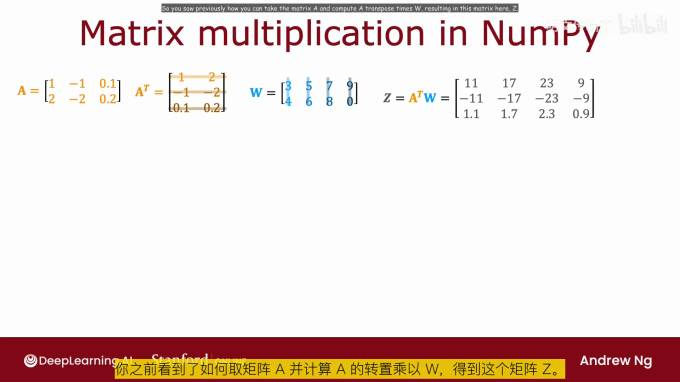
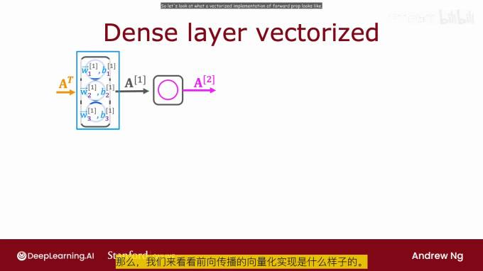

00:01话不多说，我们直接进入神经网络的向量化实现。
00:07我们来看看你在之前视频中见过的代码，希望矩阵乘法，也就是那个矩阵乘法计算，能让你更明白。
00:19你之前看到了如何取矩阵 A 并计算 A 的转置乘以 W，得到这个矩阵 Z。

00:31如果这是矩阵 A，这是一个 NumPy 数组，其元素对应我上面写的内容，那么 A 的转置，我将写成 AT，将是这个矩阵，同样，A 的列现在被放到了行上。
00:52顺便说一下，除了这样设置 AT，在 NumPy 中计算 AT 的另一种方法是写 AT 等于 A 点 T。
01:04那是转置函数，它将矩阵的列取出来并放到一边。
01:09在代码中，你会这样初始化矩阵 W。
01:14这是另一个二维 NumPy 数组。
01:18然后，要计算 Z 等于 A 的转置乘以 W，你会写 Z 等于点 matmul，传入 AT，W。
01:30这将计算出这里的矩阵乙，得到下面这个结果。
01:38顺便一说，如果你读别人的代码，有时会看到乙等于 AT 然后符号 W。
01:46这是调用 matmul 函数的另一种方式，尽管我觉得使用 np 点 matmul 更清晰。
01:55所以你在这门课看到的代码中，我们就用这样的 matmul 函数，而不是这个符号。
02:03那么，我们来看看前向传播的向量化实现是什么样子的。

02:08我将设置 A 的转置等于输入特征值二一七。
02:16这就是常规的输入特征值，二百度烘烤咖啡十七分钟。
02:22所以这是一个一乘二的矩阵。
02:26我将取参数 W-、W 二和 w 三，像这样将它们按列堆叠，形成这个矩阵大写 W。
02:38而值 b、b、b，我将放入一个一乘三的矩阵，也就是这个矩阵 B，如下所示。
02:47那么结果是，如果你计算 Z 等于 A 转置乘 W 加 B，会得到这三个数字。
02:59这是通过取输入特征值并乘以第一列，然后加上 b，得到一六五。
03:11取这些特征值，与第二列，也就是权重 w 二做点积，再加上 b 二，得到负五三-。
03:21这些特征值与权重 w 三点积，再加上 b 三，得到九百。
03:28如果你想仔细核对这些计算，可以暂停视频，但这会给出 z 一一、2一二和 z 一三的值。
03:41最后，如果函数 g 将 sigmoid 函数逐个元素应用于这三个数，也就是说，将 sigmoid 函数应用于一六五、负五三一和九百。
03:55那么你最终得到 a 等于 g 作用于这个矩阵 z，结果是一零一。
04:02它是一、零、一，因为 sigmoid 函数作用于一六五的结果非常接近一，你知道，不考虑数值舍入误差，它基本就是一。

04:20我们来看看如何在代码中实现。
04:23A 的转置等于这个，就是这个一乘二的数组二一七。
04:29矩阵 W 是这个二乘三矩阵。
04:37所以，你可以这样在层中实现前向传播：dense 输入 A 转置，W B 等于 Z 等于 matmul A 转置乘 W。
04:54然后 A_，也就是这个层的输出，等于 g，即逐个元素应用于这个矩阵乙的激活函数。
05:07然后你返回 A_，这就给出了这个值。
05:13如果你把这张幻灯片和几个视频前的幻灯片比较，会发现只有一点小区别，根据惯例，在 TensorFlow 中的实现方式，我们不把这个变量叫 AT，而是叫 A_in，这也是为什么这同样是代码的正确实现。

05:34TensorFlow 中还有一个惯例，即单个样本实际上是在矩阵 x 中按行排列的，而不是在矩阵 x 的转置中，这就是为什么在 TensorFlow 中代码实现看起来像这样。
05:50但这解释了为什么只用几行代码，你就能在神经网络中实现前向传播。
05:57而且，还能获得巨大的好处，因为现代计算机非常擅长高效地实现矩阵乘法，比如 matmul。
06:08这是本周的最后一个视频。
06:11感谢你一直坚持看完这些可选视频的最后。
06:16本周剩下的时间，我希望你也去看看，看看测验和实践实验，以及可选的实验，以便更深入地练习这些材料。
06:28你现在知道了如何在神经网络中进行推理和前向传播，我觉得这真的很酷。
06:37在你完成测验和实验之后，请一定再回来，下周我们将学习如何真正地训练神经网络。
06:46那么，期待下周见到你。